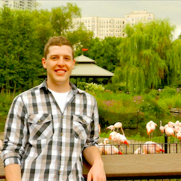
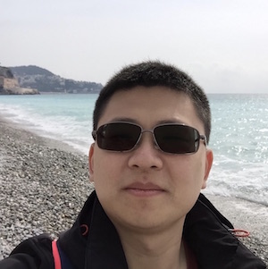
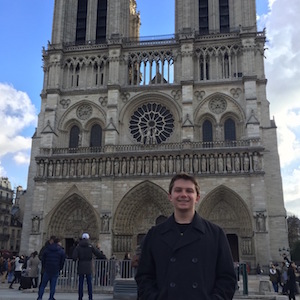

 kamuda1@illinois.edu
 jzhao59@illinois.edu
 karoth4@illinois.edu
loumis2@illinois.edu
stinnettjacob@gmail.comu
mcheng6@illinois.edu
zircher2@illinois.edu
Start Date: August, 2017
Required Skills: acceptance into the NPRE graduate program, interest in radiation detection or big data, competency in some programming language.
Desired Skills: Python, git, statistics, machine learning
Start Date: August, 2017
Required Skills: acceptance into the NPRE graduate program, interest in radiation detection analysis or big data, competency in some programming language.
Desired Skills: Python, git, statistics, machine learning
All members of the research group are required to agree with the code of conduct.
As your PI, it is my responsibility to do a number of things.
Students who are my advisees have many responsibilities to themselves, to me, and to one another.
The following are not explicitly required, but are strongly encouraged.
Undergraduate students in the research group have a few core responsibilities. For details on each of these, see above for now.